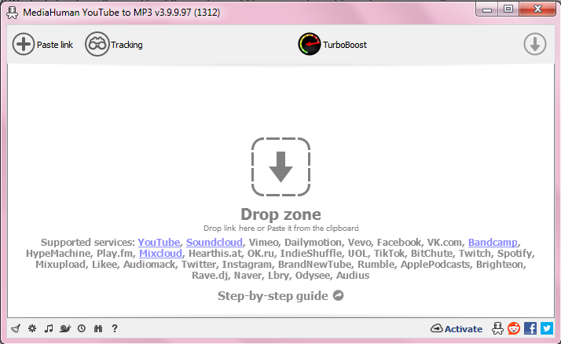
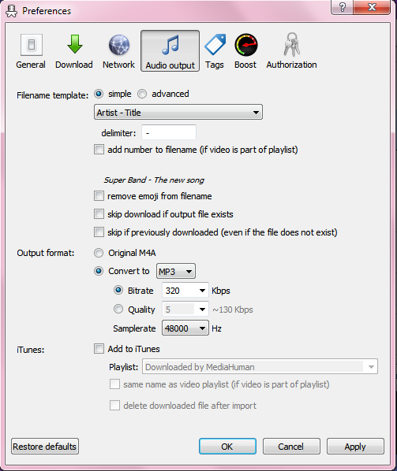
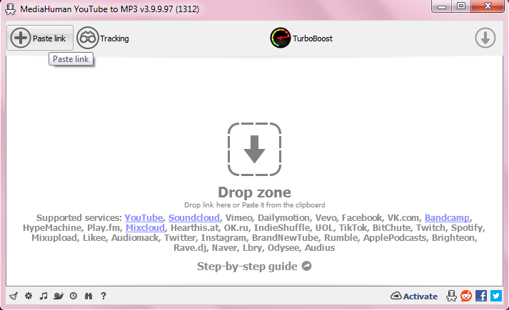
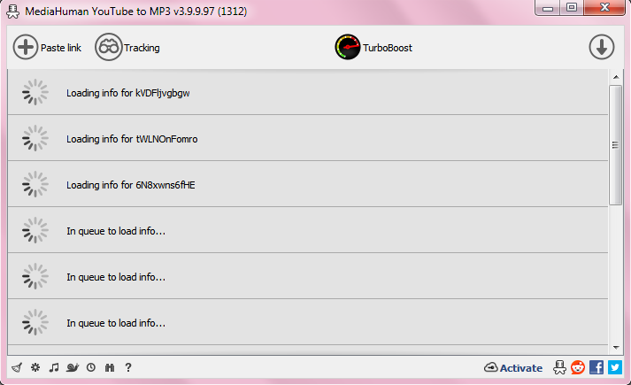
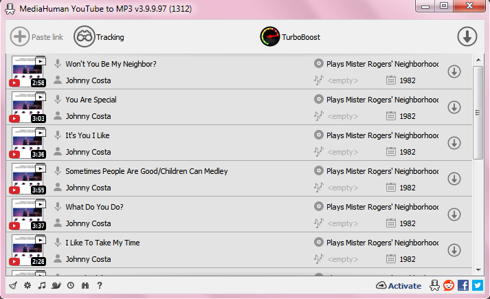
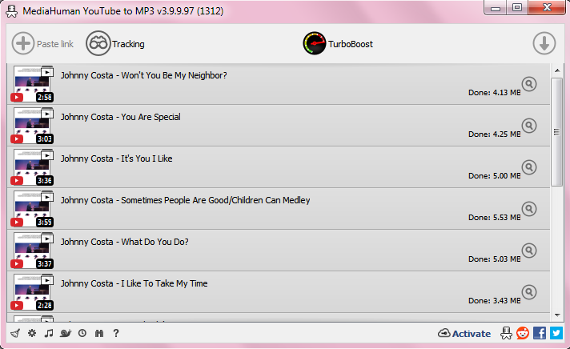

YouTube for MYO
This is in my opinion the best option for using YouTube as a MYO source, since it can do whole playlists at once and run in the background. However, it will only work on computers.
This guide will be assuming you know how to install software on your computer of choice and can install the program independently. Screenshots will be of Windows because that’s what I use, but the software should look about the same on both.
To get started, please follow this link, and download and install the version appropriate for your computer.
Here is what the software looks like once it is installed: 
As you can see there is a full list of different supported websites it can be used to pull audio from, but for our purposes we’re interested in just the YouTube functionality for now. Please note while it lists Spotify as a supported option, so far it seems to actually just match Spotify content to YouTube and download it from there. As this might result in lesser quality audio, I do not recommend using this method for acquiring Spotify files.
Optional: You may like to start by going to preferences (small gear icon at the bottom right), and adjusting the output to the highest audio quality: 
You will now need to find the link to a video or playlist that you want to turn into a MYO. For the example, I’m using Johnny Costa’s Mr. Roger’s Neighbourhood album (though in general I don’t recommend you download albums from YouTube). I have copied the link to a playlist of the album, and will now press the large “Paste Link” button at the top left to add it to MediaHuman: 
At which point it will begin finding all the information it needs to download the audio: 

When it’s ready to start downloading, you will see all the track names, thumbnails, and information filled in as above. You can then press the large downwards-pointing arrow at the top right to begin the download and conversion.
(if you only want to download a few tracks, you can download them individually by pressing the arrow to the right of that track specifically, rather than the one on top)
It will now work through the queue until everything is downloaded. This usually happens pretty quickly, but if you’re downloading a very large playlist, feel free to go do something else for a bit and come back to it. It doesn’t need to be managed during this process.
When it’s done, the arrow next to each track will have become a magnifying glass, which you can press to find where it has saved the files: 
You can then press the little broom icon in the bottom left to empty the list, and you’re free to start all over again!